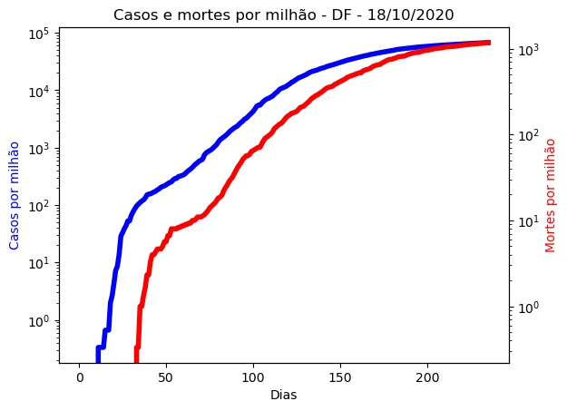

DF - 18/10/2020.
Detalhes técnicos, aqui. Clique aqui para uma versão em PDF desta análise.
População: 3.015.268.
Início e fim da série: 2020-02-25 e 2020-10-17. (236 elementos - 33 semanas e 5 dias).
Número de casos totais e mortes: 204.304 e 3.539. (67.756 e 1.174 por milhão de habitantes, respectivamente.)
r0 (integral) efetivo médio (duas últimas semanas - três dias de atraso): nan (std = nan).
Último intervalo para r0 (três dias de atraso): (-45,56 : -32,56).
Limiar imunidade de grupo nR (baseado no valor de r0 (integral) efetivo médio) = nan.
Previsão do número total de casos para os próximos 5 dias: 204.978, 205.653, 206.328, 207.003, 207.678.
